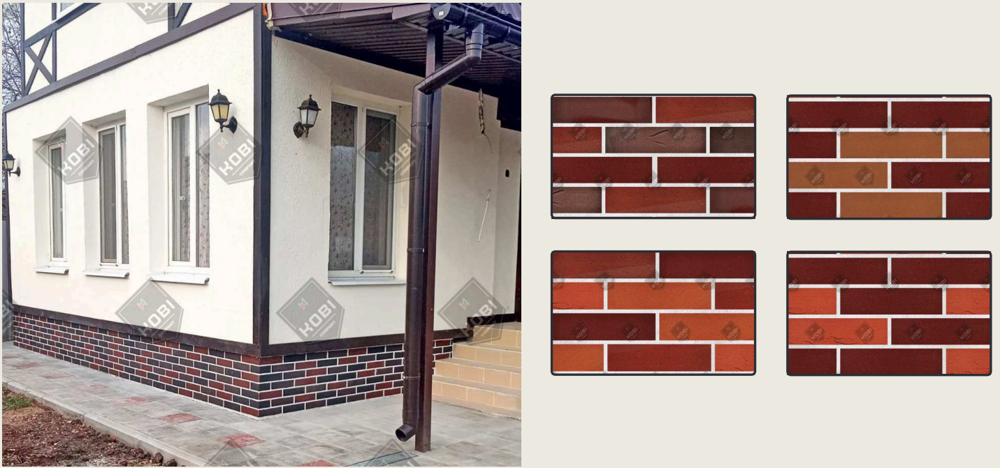

Благородный хаотичный микс из четырёх оттенков клинкера — от светло-бежевого до тёмно-коричневого. Классическая немецкая архитектура на любом доме, без тяжелого фундамента.

Именно случайное смешивание плиток разных тонов создаёт живой, «дышащий» рисунок без повторяемости — фирменный знак баварской кладки.
Это не просто цвет — это архитектурное решение, которое делает дом особенным
Хаотичное смешивание четырёх тонов исключает монотонность. Большой фасад выглядит как настоящая старинная кладка с глубиной и характером.
Минеральные пигменты на основе оксидов железа стабильны под ультрафиолетом. Через 15 лет отделка выглядит так же, как в день монтажа.
В 15–20 раз легче клинкерного кирпича. Можно монтировать даже на ветхие стены с лёгким фундаментом без усиления конструкции.
Прошёл испытания в условиях Сибири и Крайнего Севера. Выдерживает более 150 циклов замерзания и оттаивания без трещин и расслоений.
Материал гнётся в любую сторону с радиусом от 5 см. Углы, колонны, эркеры и арки облицовываются без пила и специальных добора.
Изготавливаем бесперебойно. Каждая партия Баварской Кладки соответствует эталону цвета — нет разнотона между партиями.
Полные параметры гибкого кирпича Баварская Кладка ITAR.KZN
Подходит для наружных и внутренних работ в любом климате России
Частные дома, коттеджи, таунхаусы
Влагостойкое и морозостойкое покрытие
Акцентные стены, камины, кухня-столовая
Аутентичная европейская атмосфера
Жаростойкость при внешнем монтаже
Материал гнётся, повторяя любую форму
Отправьте фото в WhatsApp или Telegram — мы сделаем бесплатную ИИ-визуализацию с Баварской Кладкой.
Бесплатно рассчитаем точное количество м² и стоимость с учётом всех нюансов объекта.
После согласования запускаем производство. Срок изготовления Баварской Кладки — от 5 рабочих дней.
Доставляем транспортной компанией по всей России или самовывоз из Казани. Монтаж любой бригадой или самостоятельно.